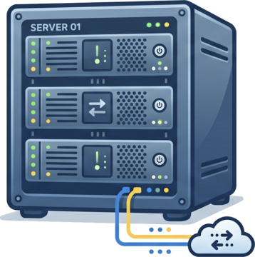

🚩 [導入編] ブラウザの中の Linux から外と通信する
右のターミナルはブラウザの WebAssembly 上で動いている Alpine Linux (RISC-V) です。
さらに、ホスト Mac で常駐させている c2w-net が
L2 イーサネットフレームを WebSocket で受けて、ホスト OS の本物 socket() で外に出す
ので、コンテナ内から wget / ping / nslookup がそのまま使えます。
📖 このチャプターの解説

ブラウザ内 Linux を準備中…
WebAssembly イメージを取得しています (約 26〜42MB)。
初回は数十秒かかります。
初回は数十秒かかります。
RISC-V 上で Alpine Linux を起動 → c2w-net 経由で外部ネットへ接続